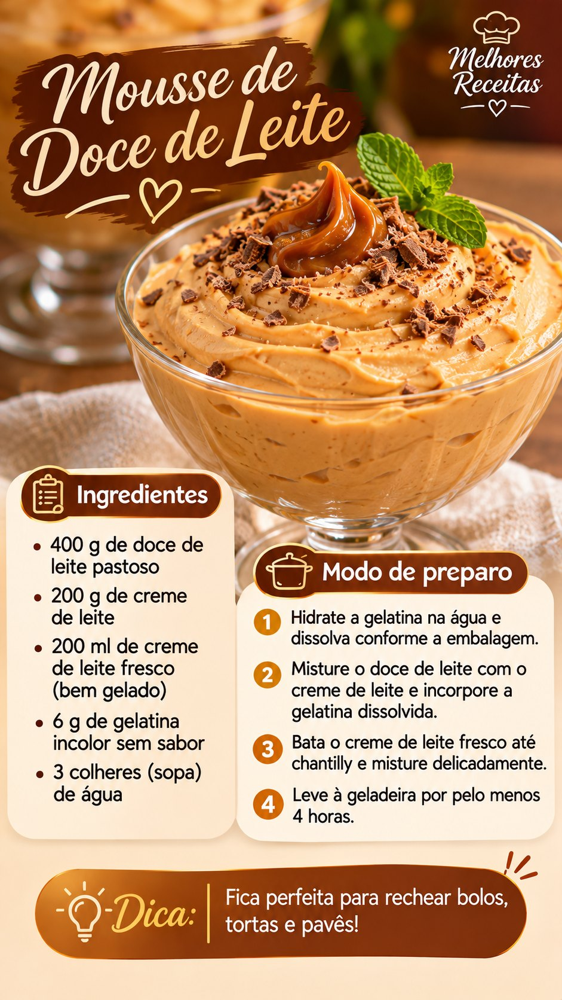

Mousse de doce de leite cremosa com creme de leite, chantilly e gelatina. Sobremesa fácil, sem forno, que também serve para rechear bolos, tortas e pavês.
Esta mousse de doce de leite é aerada, cremosa e muito fácil: leva só 5 ingredientes e não vai ao forno. O chantilly de creme de leite fresco deixa a textura leve, e a gelatina garante que ela fique firme depois da geladeira. Sirva em taças com raspas de chocolate ou use como recheio de bolos, tortas e pavês.
Modo de preparo
Hidrate a gelatina na água e dissolva conforme as instruções da embalagem.
Misture o doce de leite com o creme de leite e incorpore a gelatina dissolvida.
Bata o creme de leite fresco até o ponto de chantilly e misture delicadamente ao creme de doce de leite.
Distribua em taças ou num refratário e leve à geladeira por pelo menos 4 horas.
Ficha da receita

A ficha completa da receita
Dica:Fica perfeita para rechear bolos, tortas e pavês!
Fez esta receita?
Conta pra gente como ficou! Deixe um comentário, mande uma foto do seu resultado
ou marque @melhores.receitas126 no seu post.
Conta pra gente como ficou! Deixe um comentário, mande uma foto do seu resultado ou marque @melhores.receitas126 no seu post.